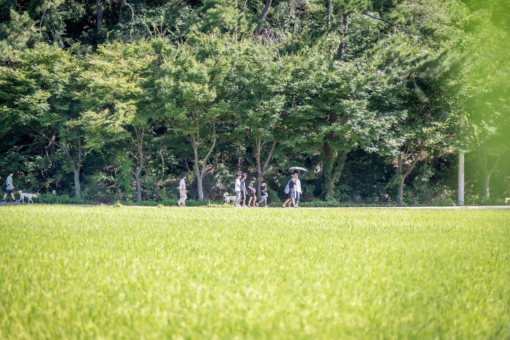
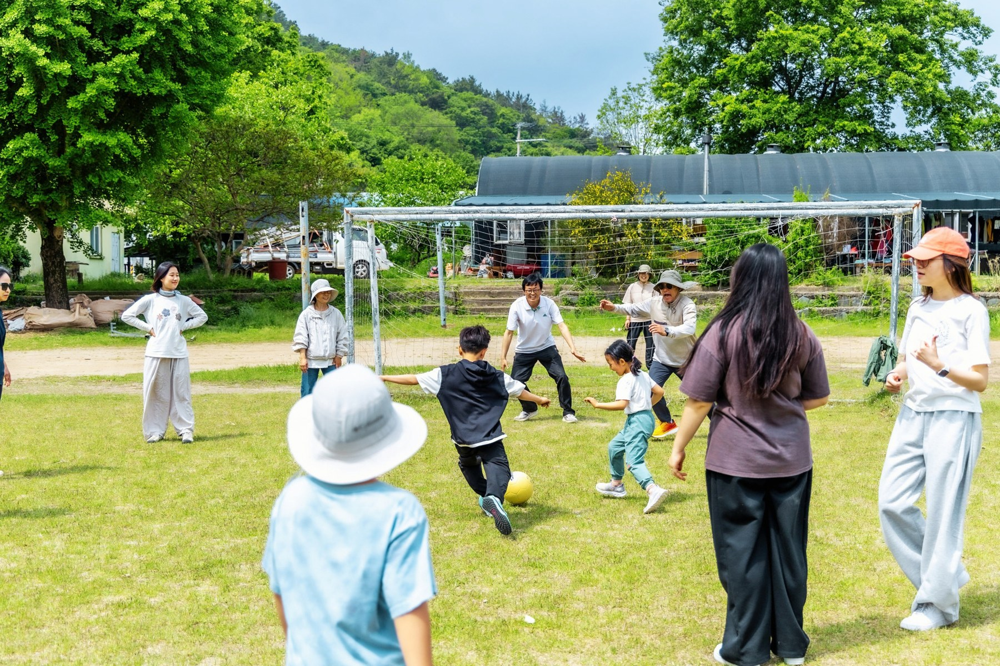
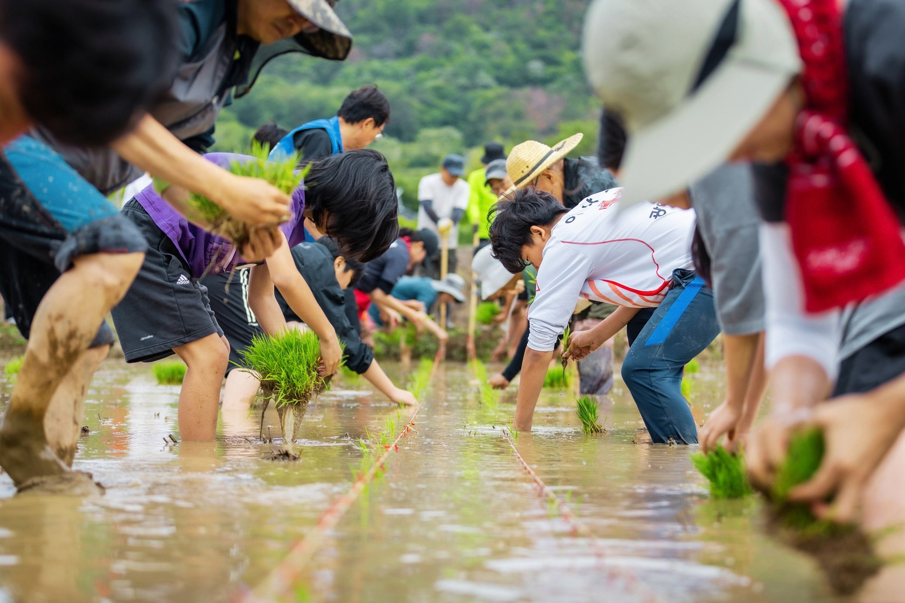
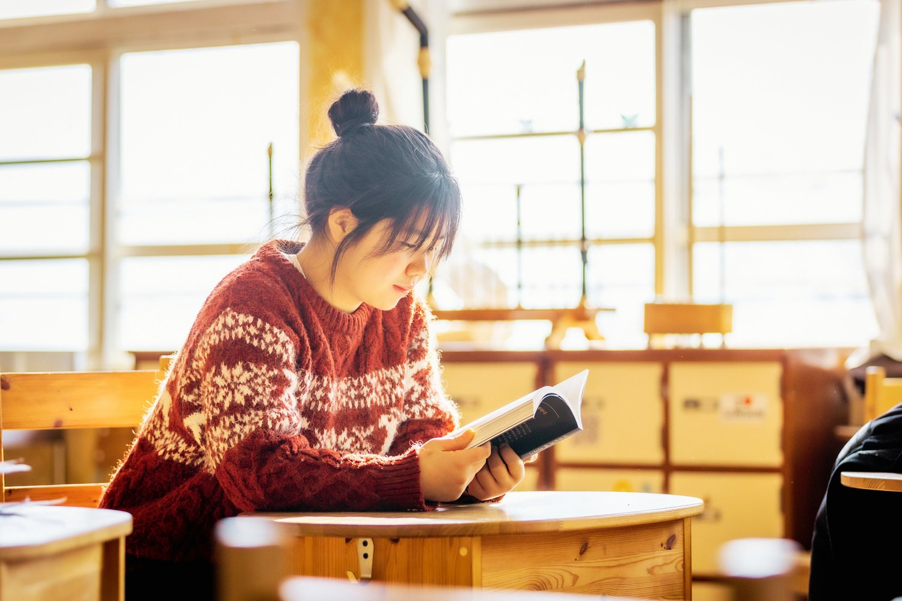
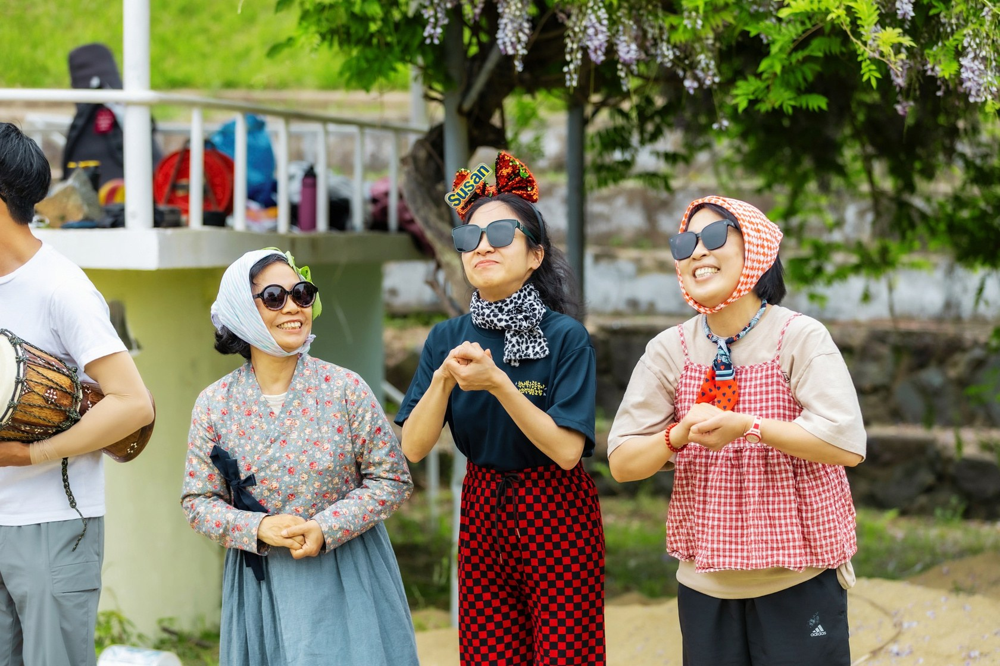
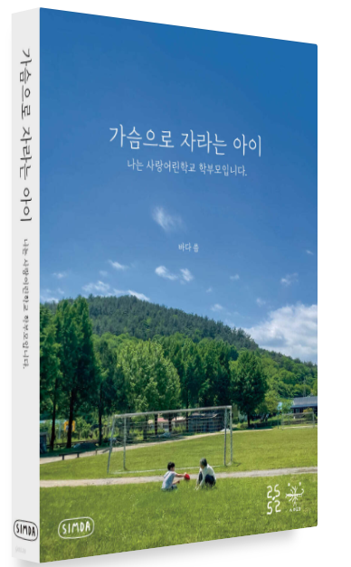

01 / 걷기
날마다 길을 걸어요.
풀, 곤충, 구름, 비, 바람, 나무와 마을 이웃들까지. 매일 걷는 길 위에서 세상을 만나고, 많은 동무가 생깁니다.
2027 사랑어린학교 새식구모심
자신만의 속도로 자라고,
함께 살아가는 마음을 배우는 곳.
사랑어린학교에서 새 식구를 모십니다.
초등 전 학년 · 중등 1학년

우리가 함께 믿는 것
사랑어린학교는 그 마음을 몸과 삶으로 배웁니다.
길을 걷고, 밥을 짓고, 서로를 돌보며
나와 세상을 알아가는 하루하루를 함께합니다.
사랑어린학교의 하루
교실 안에서도, 논과 밭에서도.
우리의 배움은 삶으로 이어집니다.

01 / 걷기
풀, 곤충, 구름, 비, 바람, 나무와 마을 이웃들까지. 매일 걷는 길 위에서 세상을 만나고, 많은 동무가 생깁니다.

02 / 밥 모시기
직접 씨앗을 심고, 모내기를 하고, 수확합니다. 내 손으로 길러낸 한 끼가 얼마나 소중한지 몸으로 배웁니다.

03 / 마음 돌보기
살면서 가장 많이 하는 몸짓, 숨 쉬기를 배웁니다. 어려운 순간에도 차분히 자신의 마음을 들여다봅니다.

아이와 어른이 함께 자라는 학교
부모가 행복하게 살아가는 일도 아이의 배움과 이어집니다. 사랑어린학교에서는 엄마, 아빠도 행복하게 사는 법을 함께 공부합니다.
받은 만큼 나누고, 함께 살아가는 마음.
다음카페에서 학교 이야기 더 보기 ↗마음을 나누는 문답
사랑어린학교에서는 ‘학비’ 대신 ‘살림동참금’이라 부릅니다. 정해진 금액 없이 각 가정의 형편에 맞게 학교의 살림에 동참합니다. 다만 7~8학년 ‘천지인 가족’은 작은집(기숙사)에서 함께 지내기 위한 정해진 작은집 살림비가 있습니다. 자세한 내용은 학교로 문의해 주세요.
9학년에는 어떤 배움을 이어가고 싶은지 자신의 마음을 들여다보는 시간을 가집니다. 일반 학교, 대안학교, 스스로 찾아가는 배움, 마을인생학교 등 저마다의 길을 생각합니다. ‘무엇이 될까’보다 ‘어떻게 살아갈까’를 함께 이야기합니다.
아이들이 세상과 자신을 알아가는 속도는 모두 다릅니다. 조금 빠르게, 때로는 한 걸음 늦게 적응하면서 자기만의 리듬으로 배움의 길을 걸어갑니다.
사랑어린학교는 특정한 종교의 울타리 안에 머물러 있지 않습니다. 사랑과 자비, 연민과 친절을 삶 속에서 배우고, 서로를 존중하며 다름을 배웁니다.
책으로 만나는 사랑어린학교
학교를 선택하기 전의 궁금함과 망설임.
먼저 그 길을 걸은 학부모의 이야기를 만나보세요.

반갑습니다, 새로운 식구
아이의 배움이 궁금한 마음, 학교를 만나고 싶은 마음.
설명회와 입학에 관한 이야기를 들려드립니다.
학교 061-742-1231 / 담당자 010-2975-4579
다음카페에서 학교 이야기 더 보기 ↗